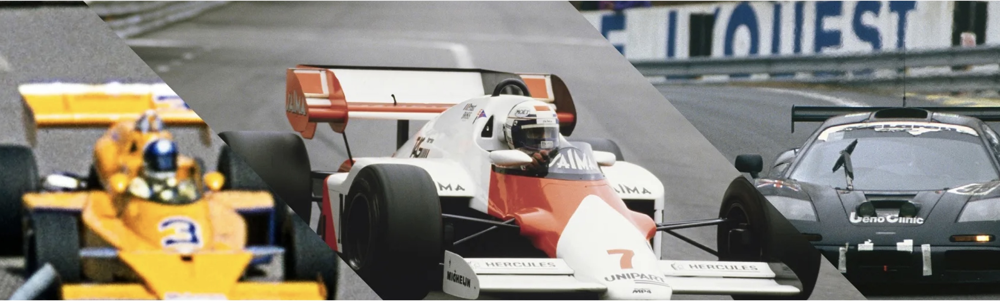
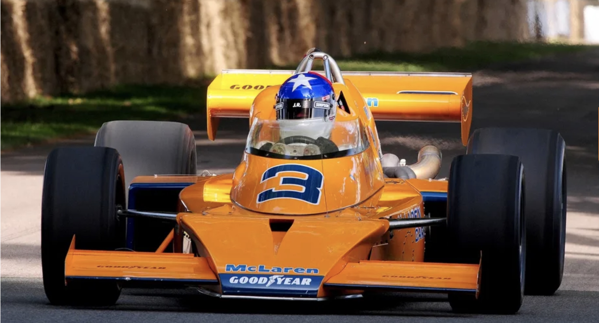
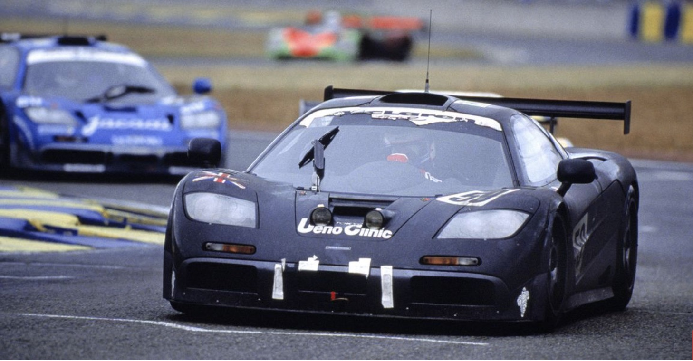

The Triple Crown

Indy 500 - 1974
McLaren's win at the Indy 500

McLaren youtube video on 1974 Indy 500
Monaco - 1984
McLaren's win at Monaco
McLaren youtube channel on 1984 Monaco GP
24 hours of Le Mans - 1995
McLaren's win at Le Mans

McLaren youtube channel on 1995b 24 hours of Le Mans